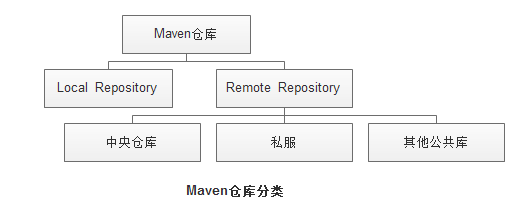
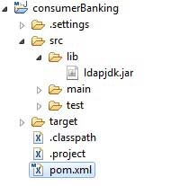
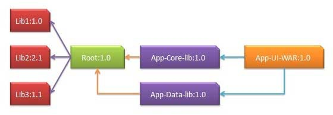

Maven

remote repository：相当于公共的仓库，大家都能访问到，一般可以用URL的形式访问
local repository：存放在本地磁盘的一个文件夹，例如，windows上默认是C:\Users\｛用户名｝.m2\repository目录
1.2 Remote Repository主要有3种：
中央仓库：http://repo1.maven.org/maven2/
私服：内网自建的maven repository，其URL是一个内部网址
其他公共仓库：其他可以互联网公共访问maven repository，例如 jboss repository等
构筑工具的演化
在讲解 Maven 之前不得不提一下 Java 构筑工具的演化，构筑工具大概经历了四个演化阶段：
Javac < Ant < Maven < Gradle
Ant 因为无法管理依赖，已经基本不再使用，而 Gradle 虽然相比 Maven 有很多的优势，但是还没有 Maven 普及。
所以 Maven 还是有学习价值的。但是越复杂的构筑 Gradle 越有优势。
路径
1.基于groupId准备路径，将句点分隔符转成路径分隔符，就是将 "." 转换成 "/" ; example： org.testng --->org/testng
2.基于artifactId准备路径，将artifactId连接到后面：org/testng/testng
3.使用version准备路径，将version连接到后面：org/testng/testng/5.8
4.将artifactId于version以分隔符连字号连接到后面：org/testng/testng/5.8/tesng-5.8
5.判断如果构件有classifier，就要在 第4项 后增加 分隔符连字号 再加上 classifier，org/testng/testng/5.8/tesng-5.8-jdk5
6.检查构件的extension，如果extension存在，则加上句点分隔符和extension，而extension是由packing决定的，org/testng/testng/5.8/tesng-5.8-jdk5.jar
约定配置
C:\MVN>mvn archetype:generate
-DgroupId=com.companyname.groupid
-DartifactId=projectid
-DarchetypeArtifactId=maven-archetype-quickstart
-DinteractiveMode=false
.存放 pom.xml 和所有的子目录./src/main/java项目的java源代码./src/main/resources项目的资源，比如说 property 文件，springmvc.xml./src/test/java项目的测试类，比如说 Junit 代码./src/test/resources测试用的资源./src/main/webapp/WEB-INFweb应用文件目录，web项目的信息，比如存放 web.xml、本地图片、jsp 视图页面./target打包输出目录./target/classes编译输出目录./target/test-classes测试编译输出目录Test.javaMaven 只会自动运行符合该命名规则的测试类~/.m2/repositoryMaven 默认的本地仓库目录位置
POM 配置
POM 即项目对象模型(Project Object Model)文件是 Maven 项目的核心配置。
主要定义了：
- 项目依赖（project dependencies）
- 插件（plugins）
- 目标操作（goals）
- 构建（build profiles）
- 项目版本（project version）
- 开发者（developers）
- 邮件列表（mailing list）
Super POM
Super POM是 Maven 默认的 POM。所有的 POM 都继承自一个 Super POM（无论是否显式定义）。
其中定义了 Maven 在执行目标时需要用到的默认工程源码目录结构、输出目录、需要的插件、仓库和报表目录等等，就可以在需要时重写覆盖即可。
有关内容和 POM 标签大全可以参考：
POM 标签大全详解
基本命令
mvn compile，编译 class 文件。mvn install，将项目放到本地仓库中。mvn test，执行测试用例。mvn package，打包成 jar。mvn clean，清理编译的 target 文件夹
仓库
Maven仓库有三种类型，搜索顺序如下：
- 本地仓库（local）
- 第一次运行 Maven 构建时创建，Maven 会自动下载所有依赖的 Jar 包到本地仓库中。
- 中央仓库（central）
- 即社区提供的参考
- 默认为：http://repo1.maven.org/maven2/
- 远程仓库（remote）
- 中央仓库找不到依赖时使用
<repositories>
<repository>
<id>companyname.lib1</id>
<url>http://download.companyname.org/maven2/lib1</url>
</repository>
</repositories>
依赖格式：
<dependency>
<groupId>com.nemos</groupId>
<artifactId>website</artifactId>
<version>1.0.0</version>
</dependency>
换源
将仓库源换成阿里云。
修改 maven 根目录下的 conf 文件夹中的 setting.xml 文件，在 mirrors 节点上，添加内容如下：
<mirrors> <mirror>
<id>alimaven</id>
<name>aliyun maven</name>
<url>http://maven.aliyun.com/nexus/content/groups/public/</url>
<mirrorOf>central</mirrorOf>
</mirror>
</mirrors>pom.xml文件里添加：
<repositories> <repository>
<id>alimaven</id>
<name>aliyun maven</name>
<url>http://maven.aliyun.com/nexus/content/groups/public/</url>
<releases>
<enabled>true</enabled>
</releases>
<snapshots>
<enabled>false</enabled>
</snapshots>
</repository>
</repositories>
外部依赖

<dependencies>
<!-- 在这里添加你的依赖 -->
<dependency>
<groupId>ldapjdk</groupId> <!-- 库名称，也可以自定义 -->
<artifactId>ldapjdk</artifactId> <!--库名称，也可以自定义-->
<version>1.0</version> <!--版本号-->
<scope>system</scope> <!--作用域-->
<systemPath>${basedir}\src\lib\ldapjdk.jar</systemPath> <!--项目根目录下的lib文件夹下-->
</dependency>
</dependencies>
重要概念
lifecycle
Maven 有以下三个标准的生命周期：
clean：项目清理的处理default(或build)：项目部署的处理site：项目站点文档创建的处理
这里列出一些比较常见的 phase，但是实际上 build lifecycle 完整包含了23个 phase。
validate验证项目是否正确且所有必须信息是可用的compile源代码编译在此阶段完成test使用适当的单元测试框架（例如JUnit）运行测试package创建JAR/WAR包如在 pom.xml 中定义提及的包verify对集成测试的结果进行检查，以保证质量达标install安装打包的项目到本地仓库，以供其他项目使用deploy拷贝最终的工程包到远程仓库中，以共享给其他开发人员和工程
phase
phase 是 lifecycle 的组成部分，一个 lifecycle 可以包含任意个 phase，一个 phase 也可以被任意个 lifecycle 包含。phase 必须要绑定 goal 才可以运行。
phase 还有一个重要特性就是顺序执行， lifecycle 中，运行一个 phase 时，其之前的 phase 也会被运行。
比如执行的 compile 时，会先执行 compile 之前的所有 phase，其中就包含了 validate。
goal
goal 就是任务执行的最小单元了，一个 phase 可以有多个 goal，goal 也是按顺序执行的。
mojo
mojo 是 goal 的具体实现，是 Maven 提供出来实现具体功能的插件接口。
插件
首先要理解 Maven 本质上是一个插件执行框架，所有任务都是由插件来完成的。
之前已经提到了 Maven 执行的四个层次，lifecycle > phase > goal > mojo。
在输入 mvn 命令的时候 比如 mvn clean，clean 对应的就是 Clean 生命周期中的 clean 阶段。但是 clean 的具体操作是由 maven-clean-plugin 来实现的。
一个插件可以绑定多个 goal。
执行插件的格式：mvn [plugin-name]:[goal-name]
比如使用 mvn compiler:compile命令指定 maven-compiler-plugin 来进行编译操作。
类型
插件一般分为两类:
- 构建插件（Build plugins）
- 这类插件在构建过程中执行，并且应该配置在pom.xml文件的
- 这类插件在构建过程中执行，并且应该配置在pom.xml文件的
- 报告插件（Reporting plugins）
- 这类插件在生成站点过程中执行，并且应该配置在pom.xml文件的
节点中。
- 这类插件在生成站点过程中执行，并且应该配置在pom.xml文件的
常见插件
clean构建完成后清理目标，删除目标目录。compiler编译 Java 源文件。surefile运行 JUnit 单元测试，生成测试报告。jar从当前项目生成 JAR 文件。war从当前项目生成 WAR 文件。javadoc生成项目的 Javadoc。antrun运行任意指定构建阶段的一系列 ant 任务。
示例
这里使用 maven-antrun-plugin 来在某个 phase 进行 echo 操作。
<project xmlns="http://maven.apache.org/POM/4.0.0"
xmlns:xsi="http://www.w3.org/2001/XMLSchema-instance"
xsi:schemaLocation="http://maven.apache.org/POM/4.0.0
http://maven.apache.org/xsd/maven-4.0.0.xsd">
<modelVersion>4.0.0</modelVersion>
<groupId>com.companyname.projectgroup</groupId>
<artifactId>project</artifactId>
<version>1.0</version>
<build>
<plugins>
<plugin>
<groupId>org.apache.maven.plugins</groupId>
<artifactId>maven-antrun-plugin</artifactId>
<version>1.1</version>
<executions>
<execution>
<id>id.clean</id>
<phase>clean</phase>
<goals>
<goal>run</goal>
</goals>
<configuration>
<tasks>
<echo>clean phase</echo>
</tasks>
</configuration>
</execution>
</executions>
</plugin>
</plugins>
</build>
</project>
> mvn clean
[INFO] Scanning for projects...
[INFO] ------------------------------------------------------------------
[INFO] Building Unnamed - com.companyname.projectgroup:project:jar:1.0
[INFO] task-segment: [post-clean]
[INFO] ------------------------------------------------------------------
[INFO] [clean:clean {execution: default-clean}]
[INFO] [antrun:run {execution: id.clean}]
[INFO] Executing tasks
[echo] clean phase
[INFO] Executed tasks
[INFO] ------------------------------------------------------------------
[INFO] BUILD SUCCESSFUL
[INFO] ------------------------------------------------------------------
[INFO] Total time: < 1 second
[INFO] Finished at: Sat Jul 07 13:38:59 IST 2012
[INFO] Final Memory: 4M/44M
[INFO] ------------------------------------------------------------------
即：
- 插件是在 pom.xml 中使用 plugins 元素定义的。
- 每个插件可以有多个目标。
- 你可以定义 phase，插件会使用它的 phase 元素开始处理。我们已经使用了 clean 阶段。
- 你可以通过绑定到插件的目标的方式来配置要执行的任务。我们已经绑定了 echo 任务到 maven-antrun-plugin 的 run 目标。
- 就是这样，Maven 将处理剩下的事情。它将下载本地仓库中获取不到的插件，并开始处理。
依赖
依赖发现
依赖的传递与发现有以下几种机制：
- 依赖调解（Dependency mediation）
- 当遇到多个版本的 artifact 的时候，决定使用那个版本的依赖。如果两个版本的依赖在依赖树种处于同一深度时，第一个被声明的依赖将被使用。
- 依赖管理（Dependency management）
- 当在传递性依赖中遇到时，直接指定要使用的构件版本。举个例子，项目 C 可以在 dependencyManagement 部分配置包含 B 作为依赖，并且直接控制引用 B时使用那个版本的 B。
- 依赖作用域（Dependency scope）
- 按照当前构建的阶段，配置包含的依赖。
- 排除依赖（Excluded dependencies）
- 任何传递性的依赖都可以通过使用“exclusion”节点来排除。举个例子，A 依赖于 B 并且 B 依赖于 C， 那么 A 可以标记 C 为排除在外的。
- 可选依赖（Optional dependencies）
- 任何传递性的依赖都可以通过使用“optional”节点来标记为可选的。举个例子，A 依赖于 B 并且 B 依赖于 C， 现在 B 标记 C 为可选的，那么 A 可以不使用 C。
依赖作用域
compile项目 classpath 中的依赖可以使用，为默认作用域。provided依赖将由 JDK 或者 运行时的 Web 服务器或容器提供。runtime依赖在编译时不需要，但在执行时需要。test依赖只在测试编译和执行阶段可用。system必须提供系统路径。import只在依赖是 pom 类型时使用。表示特定的 POM 需要替换成被引入的 POM 的 部分中的依赖。
依赖管理
比如构建一个如下的依赖关系。

App-UI-WAR
<project xmlns="http://maven.apache.org/POM/4.0.0"
xmlns:xsi="http://www.w3.org/2001/XMLSchema-instance"
xsi:schemaLocation="http://maven.apache.org/POM/4.0.0
http://maven.apache.org/xsd/maven-4.0.0.xsd">
<modelVersion>4.0.0</modelVersion>
<groupId>com.companyname.groupname</groupId>
<artifactId>App-UI-WAR</artifactId>
<version>1.0</version>
<packaging>war</packaging>
<dependencies>
<dependency>
<groupId>com.companyname.groupname</groupId>
<artifactId>App-Core-lib</artifactId>
<version>1.0</version>
</dependency>
</dependencies>
<dependencies>
<dependency>
<groupId>com.companyname.groupname</groupId>
<artifactId>App-Data-lib</artifactId>
<version>1.0</version>
</dependency>
</dependencies>
</project>
App-Core-lib
<project xmlns="http://maven.apache.org/POM/4.0.0"
xmlns:xsi="http://www.w3.org/2001/XMLSchema-instance"
xsi:schemaLocation="http://maven.apache.org/POM/4.0.0
http://maven.apache.org/xsd/maven-4.0.0.xsd">
<parent>
<artifactId>Root</artifactId>
<groupId>com.companyname.groupname</groupId>
<version>1.0</version>
</parent>
<modelVersion>4.0.0</modelVersion>
<groupId>com.companyname.groupname</groupId>
<artifactId>App-Core-lib</artifactId>
<version>1.0</version>
<packaging>jar</packaging>
</project>
App-Data-lib
<project xmlns="http://maven.apache.org/POM/4.0.0"
xmlns:xsi="http://www.w3.org/2001/XMLSchema-instance"
xsi:schemaLocation="http://maven.apache.org/POM/4.0.0
http://maven.apache.org/xsd/maven-4.0.0.xsd">
<parent>
<artifactId>Root</artifactId>
<groupId>com.companyname.groupname</groupId>
<version>1.0</version>
</parent>
<modelVersion>4.0.0</modelVersion>
<groupId>com.companyname.groupname</groupId>
<artifactId>App-Data-lib</artifactId>
<version>1.0</version>
<packaging>jar</packaging>
</project>
Root
<project xmlns="http://maven.apache.org/POM/4.0.0"
xmlns:xsi="http://www.w3.org/2001/XMLSchema-instance"
xsi:schemaLocation="http://maven.apache.org/POM/4.0.0
http://maven.apache.org/xsd/maven-4.0.0.xsd">
<modelVersion>4.0.0</modelVersion>
<groupId>com.companyname.groupname</groupId>
<artifactId>Root</artifactId>
<version>1.0</version>
<packaging>pom</packaging>
<dependencies>
<dependency>
<groupId>com.companyname.groupname1</groupId>
<artifactId>Lib1</artifactId>
<version>1.0</version>
</dependency>
</dependencies>
<dependencies>
<dependency>
<groupId>com.companyname.groupname2</groupId>
<artifactId>Lib2</artifactId>
<version>2.1</version>
</dependency>
</dependencies>
<dependencies>
<dependency>
<groupId>com.companyname.groupname3</groupId>
<artifactId>Lib3</artifactId>
<version>1.1</version>
</dependency>
</dependencies>
</project>
现在当我们构建 App-UI-WAR 项目时， Maven 将通过遍历依赖关系图发现所有的依赖，并且构建此应用。
这里有几个关键概念：
- 通用依赖可以使用父 pom 的概念放置在单独的地方。App-Data-lib 和 App-Core-lib 项目的依赖是在 Root 项目中列出的（参见 Root 的打包类型，是 POM)。
- 在 App-UI-WAR 项目中不需要指定 Lib1、 lib2 和 Lib3 作为依赖。Maven 使用 可传递性依赖机制（Transitive Dependency Mechanism） 可处理这种细节。